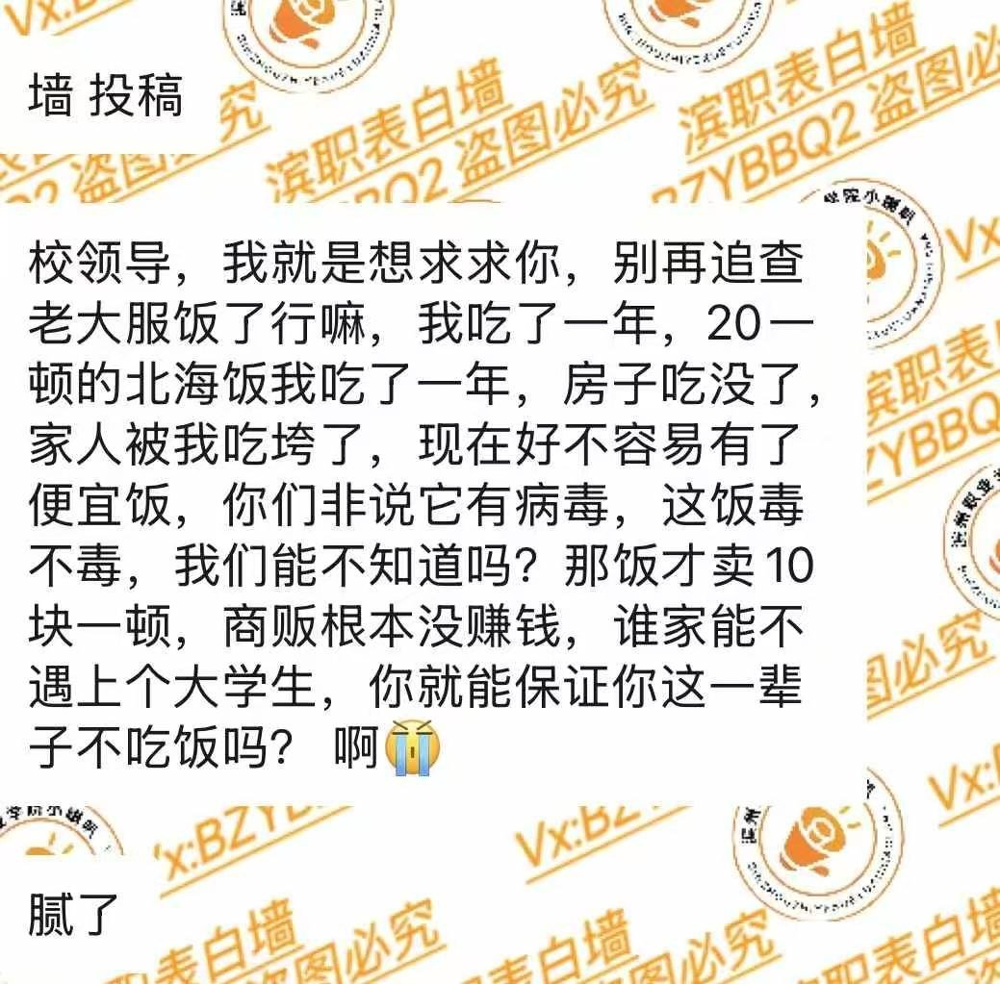
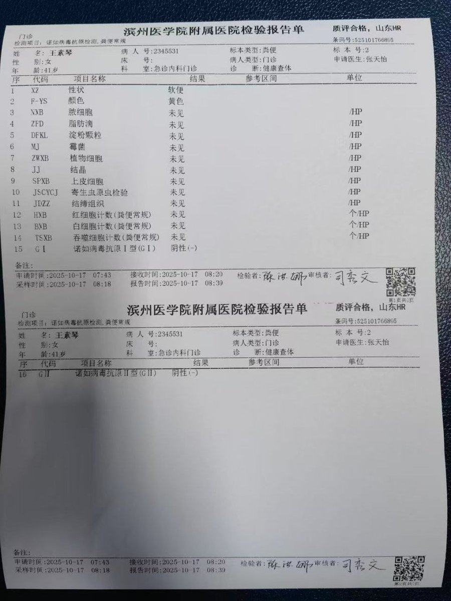

RedFox（2代目）🇲🇴🇭🇰
@FoxRed695449
@whyyoutouzhele 不允许矿泉水可以喝气泡水啊🤓👍（除非饮料都不让喝）
我感觉老师看不出来（就是价格贵点


李老师不是你老师
@whyyoutouzhele
网友投稿：滨州职业学院诺如病毒后续，学校排污水池因多日连续下雨，导致雨水倒灌，致使蓄水池被污染，学校强行压制消息试图将责任甩锅给学校食堂商户，不允许学生在此食堂就餐，进出刷脸登记。宿舍内部威胁学生不允许饮用矿泉水，发现一律没收通报处分，并且不允许学生出校门，全部封锁在校内，生病的 https://t.co/rs8bBJiwM5 https://t.co/JZOsUfXfQG